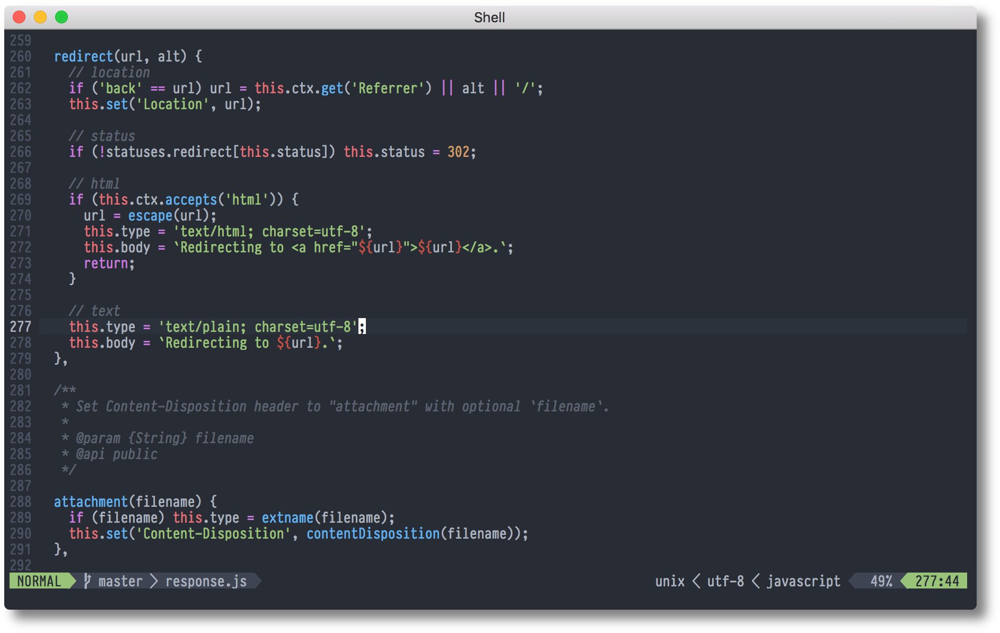

Work wherever inspiration strikes with SSH and Vim
A few months ago I was solely focused on writing my code with Visual Studio Code. As you know, this is the number one free IDE currently available. It features an editor based on a powerful Monaco Editor API, a huge number of plugins available for free from the community, and is highly configurable. Back then, I didn’t even think of moving to Vim and just thinking that I could one day solely write code with it was inconceivable. Yet, the thought of being capable of writing code with Vim was tempting. The possibility of writing code with flair, in the terminal. Not being held by the virtual hand. The freedom…
I sat down and thought of setting up my workstation first. I prefer working on macOS. For the last few months, I’ve been working on a Mac Mini. Mini’s can be useful when you don’t necessarily need the retina display and a fancy screen. For the keyboard, I decided to go with a Logitech bluetooth keyboard - K380. It’s particularly useful because it allows seamless switching between 3 connected devices. Here’s what I wanted:
- to be able to adjust to the environment I’m in at the moment
- to move freely from room to room not carying too much with me
- to switch quickly from a tv screen to a tablet, to a phone
- to be able to code from my bed or from a kitchen table - wherever inspiration strikes.
I decided to enable SSH on the Mac and use my phone, tablet and Raspberry Pi connected to a TV screen. All bluetooth enabled and connected to K380 keyboard. I used Termius app on my phone and tablet to SSH to the Mac. Many Termius features are free and it doesn’t require logging in to use. Raspberry Pi is running Raspbian OS from which I can SSH to the Mac using its terminal.
My first time with Vim was…”OK, this works but I wish it had code coloring and I could indent with a tab. Plus, if I could have code completion…”. You get the idea ;). This sent me researching for Vim configurations and I quickly concluded that I could have a pretty comfortable setup (for my standards).
Let me share my configuration with you. If you think that other plugins should be mentioned here then please add a comment under the article.
Before all the fun… the manual
With every new library, framework, and software comes the manual. Let’s look at some basics of editing files with Vim.
Toggling the manual in Vim
- Open a new file with Vim in your terminal -
vim <your-file.ex> - Press
ion your keyboard. This will enable editing mode. This is when you can edit the file. - Press
F1on your keyboard. This will open the manual. You can move up and down with arrow keys. - Write
:qto close the manual.
(From the manual) - basics - move around
VIM - main help file
Move around: Use the cursor keys, or "h" to go left, "j" to go down, "k" to
go up, "l" to go right.
Close this window: Use ":q<Enter>".
Get out of Vim: Use ":qa!<Enter>" (careful, all changes are lost!).
Jump to a subject: Position the cursor on a tag (e.g. |bars|) and hit CTRL-].
With the mouse: ":set mouse=a" to enable the mouse (in xterm or GUI).
Double-click the left mouse button on a tag, e.g. |bars|.
Jump back: Type CTRL-O. Repeat to go further back.
(From the manual) - basics - help
Get specific help: It is possible to go directly to whatever you want help on, by giving an argument to the |:help| command. Prepend something to specify the context: *help-context*
| WHAT | PREPEND | EXAMPLE |
|---|---|---|
| Normal mode command | :help x |
|
| Visual mode command | v_ | :help v_u |
| Insert mode command | i_ | :help i_<Esc> |
| Command-line command | : | :help :quit |
| Command-line editing | c_ | :help c_<Del> |
| Vim command argument | - | :help -r |
| Option | ' | :help 'textwidth' |
| Regular expression | / | :help /[ |
See |help-summary| for more contexts and an explanation.
See |notation| for an explanation of the help syntax.
Search for help: Type ":help word", then hit CTRL-D to see matching help entries for "word". Or use ":helpgrep word". |:helpgrep|
Vimtutor
You can practice using Vim thanks to an interactive tutorial. You can access it with the following command from the terminal:
vimtutor
Configuring Vim with .vimrc
Before we begin…
After adding configuration in .vimrc, if you want it to take effect immediately, take the following steps:
- Press
Esc(exits the Editing mode into Normal mode). - Save the file by writing the following command in the Normal mode and pressing Enter:
:w
- Write the following command in the Normal mode and press Enter:
:source ~/.vimrc
After the above steps, you should see the effects taking change. If in doubt, exit .vimrc and open another file (with more code) using Vim - vim <new-file.ex>.
1. Create ~/.vimrc
touch ~/.vimrc
vim ~/.vimrc
2. Enable Vim default code coloring
Add the following to your .vimrc. Enter the edition mode by pressing i and add:
syntax on
3. Editing Files - shortcuts
Editing with Vim is not an easy matter. You should know Three most important key mappings that I use when editing files:
nnoremap <F1> :w<CR>
nnoremap <F2> :q<CR>
Key mapping explanation:
nnoremap– Allows you to map keys in normal mode.inoremap– Allows you to map keys in insert mode.vnoremap– Allows you to map keys in visual mode.
nnoremap <F1> :w<CR> - Map file saving command (:w) to F1 key.
nnoremap <F2> :q<CR> - Map exiting a file (:q) to F2 key.
4. Split view - key bindings
" You can split the window in Vim by typing :split or :vsplit.
“ Horizontal window split key binding: CTRL+w+s
“ Vertical window split key binding: CTRL+w+v
" Navigate the split view easier by pressing CTRL+j, CTRL+k, CTRL+h, or CTRL+l.
nnoremap <c-j> <c-w>j
nnoremap <c-k> <c-w>k
nnoremap <c-h> <c-w>h
nnoremap <c-l> <c-w>l
5. Split View - resize window - key bindings
" Resize split windows using arrow keys by pressing:
" CTRL+UP, CTRL+DOWN, CTRL+LEFT, or CTRL+RIGHT.
noremap <c-up> <c-w>+
noremap <c-down> <c-w>-
noremap <c-left> <c-w>>
noremap <c-right> <c-w><
6. Set the encoding to UTF-8
'encoding' sets how vim shall represent characters internally. Utf-8 is necessary for most flavors of Unicode.
set encoding=utf-8
7. Add status line to the bottom of the screen
The advantage of having the status line displayed always is, that you can see the current mode, file name, file status, ruler, etc.
set laststatus=2
8. Override default backspace behavior
By default, Vim doesn’t let you erase with backspace. Override this behavior with:
set backspace=2
9 . Show line numbers
Display line numbers on the left side of the window.
set number
10. Enable horizontal cursor line and highlight it
As in VSC, the cursor line helps you to navigate the code.
set cursorline
11. Highlight cursor line
The line is very basic but we can add a background color to it:
hi CursorLine ctermbg=8
ctermbg=8 - change background color
ctermfg=White - change foreground color
cterm=bold - change font weight
12. Set tab size to 2
When using Tab, you can set this up to 2 or 4 spaces
set tabstop=2
13. Indention size
Whenever you start writing a function, Vim will automatically indent the new line inside the function.
set shiftwidth=2
14. Tell Vim not to create backup files
If backup is enabled, then before writing the file, Vim will create a backup (location depends on the backupdir setting). Afterwards, Vim will attempt to write the original file. At this point, behavior depends on the backup setting:
- If
nobackup, then the backup file is immediately deleted upon successfully writing the original file. - If
backup, then the backup file is kept afterwards and will be overwritten on future backups.
set nobackup
15. Do not let the cursor scroll below or above N number of lines
When scrolling or searching through a large file, it can be convenient to keep the cursor line near the middle of the screen (vertically centered within the window).
set scrolloff=10
16. Do not wrap lines. Allow long lines to extend as far as the line goes
set nowrap
17. Incrementally highlight matching characters as you search
Use the regular search command / and it will move the highlight as you add characters to the search string.
set incsearch
18. Ignore capital letters during the search
set ignorecase
19. Show matching words during the search
set showmatch
20. Use highlighting when doing a search
set hlsearch
Now for the big stuff - plugins
1. Install Vim Plugged
First and foremost. You need a plugin manager for Vim. This will allow you to install and configure plugins. Instructions on how to do that are here.
2. Enable OneDark color scheme
Add OneDark plugin to your plugins list:
call plug#begin('~/.vim/plugged')
Plug 'joshdick/onedark.vim'
call plug#end()
To install the plugin, exit the edition mode (key binding F1) and write :PlugInstall
A new tab will open, when the installs are done, you can close the tab by writing :q command or using key binding F2.
Enable OneDark color scheme by adding these two lines to the bottom of your .vimrc:
colorscheme onedark
😎
3. Introduce NERDtree navigation sidebar
Add Plug 'preservim/nerdtree' in your plugin list, like so:
call plug#begin('~/.vim/plugged')
Plug 'preservim/nerdtree'
call plug#end()
Add key binding below:
nnoremap <F3> :NERDTreeToggle<CR>
nnoremap <F3> :NERDTreeToggle<CR> - toggle NERDTree with F3 key.
4. Enable code completion
Add Plug 'ycm-core/YouCompleteMe' in your plugin list, like so:
call plug#begin('~/.vim/plugged')
Plug 'ycm-core/YouCompleteMe'
call plug#end()
Follow the installation on MacOs here When installed properly, you should see hints/code completion dropdown when you write code!
5. Enhance status line with more information
vim-airline/vim-airline Remember when we added the status line in the steps above? It’s time to enhance it :)
Add Plug 'vim-airline/vim-airline' in you plugin list, like so:
call plug#begin('~/.vim/plugged')
Plug 'vim-airline/vim-airline'
call plug#end()
6. Enable support for multiple programming languages
sheerun/vim-polyglot If you write code in two or more languages then you need Vim to support its syntax and indentation.
Add Plug 'sheerun/vim-polyglot' in your plugin list, like so:
call plug#begin('~/.vim/plugged')
Plug 'sheerun/vim-polyglot'
call plug#end()
You will see a hint/documentation window when you move your cursor over a specific part of the code in Normal mode. It’s disabled in Editing mode. Ahh, just like in VSC…but better!
7. Add working with Git from Vim’s command line
Trope/vim-fugitive This is a Git wrapper for Vim’s command line making it easier to work with. Vim has built-in git commands but this plugin offers more control.
Add Plug 'tpope/vim-fugitive' in your plugin list, like so:
call plug#begin('~/.vim/plugged')
Plug 'tpope/vim-fugitive'
call plug#end()
Summary
The above list is far from complete. I want to mention Ultisnips which is the ultimate solution for snippets in Vim and Vim-commentary which helps with commenting stuff out. I’m sure that you know many plugins that can make a developer’s life easier. Please share those in the comments section below. I would much appreciate your input.